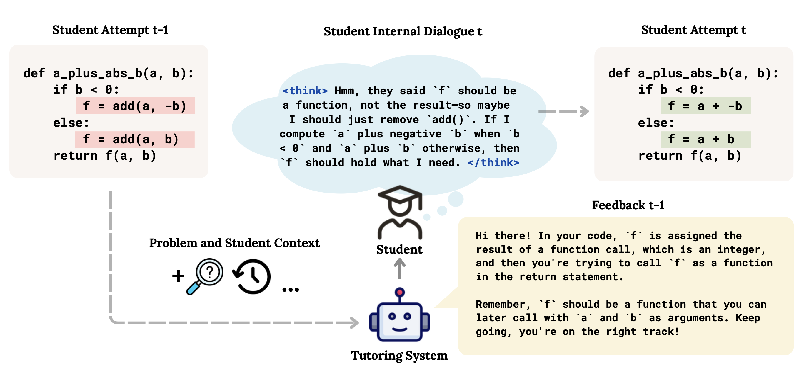
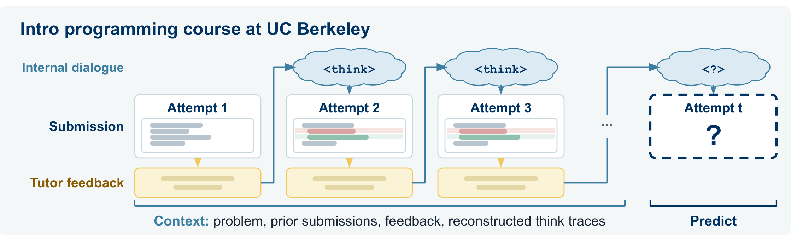
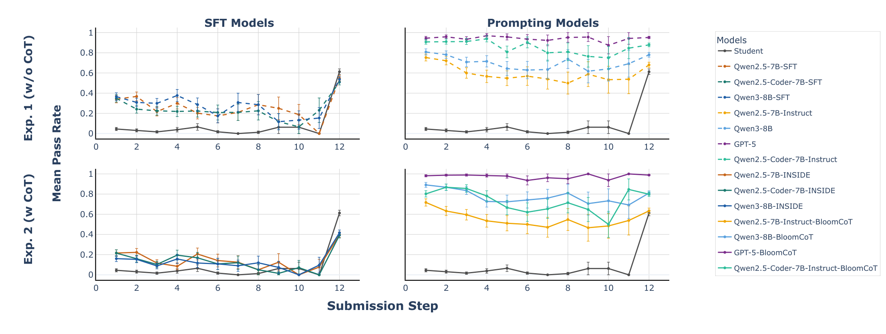
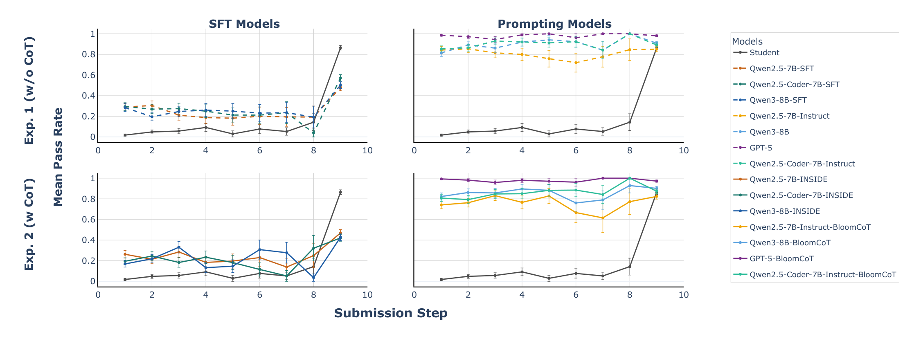

Modeling the reasoning that leads to action makes student simulators more faithful and explainable.

Given a student's prior attempt, the AI tutor's feedback, and problem context, INSIDE first generates the
student's internal dialogue, then the next code submission. Here the student takes the feedback
literally and drops add(), but still misses that f should be a function.
Abstract
Large Language Model (LLM)-based simulators often reproduce observable actions but fail to capture the
underlying reasoning behind them. In education, where student simulation is increasingly used for various
applications such as evaluating tutoring systems, this gap is especially pronounced. Two students may submit
identical submissions for entirely different reasons. We present Internal Student Dialogue
(INSIDE), a student modeling framework that fine-tunes LLMs not only to act like students but also to
think like them. INSIDE generates internal dialogue grounded in Bloom’s Taxonomy across cognitive, affective,
and action dimensions, and fine-tunes models on paired think traces and actions. We baseline against different
prompting frameworks and evaluate on two axes: fidelity of simulated actions and quality of generated internal
dialogue. Our evaluations show that INSIDE improves simulation fidelity in both action fidelity, matching code
generation of real students, and reasoning alignment, achieving the highest alignment across models up to 57.9%.
Motivation
In education, the reasoning behind a student's attempt is what matters for diagnosing misconceptions and
giving targeted feedback. Yet most LLM-based student simulators learn to copy what students do,
not why.
Same answer, different reasoning
Two students may reach the same solution, or the same wrong answer, for entirely different reasons. Observable actions give only a partial view of cognition.
Mistakes are part of learning
Work on LLM reasoning mostly targets correctness. Students make errors, hold misconceptions, and apply incomplete strategies, and a simulator has to capture that.
Beyond the black box
Prior simulators treat student behavior as a black box and only predict outcomes. A student model's key affordance is access to processes real students don't reveal.
INSIDE gives the simulator an explicit internal dialogue before each action, modeling how a student
thinks, not just what they do.
Method
1 Reconstructing latent reasoning
We only observe what students do: attempt t−1, the AI tutor's feedback, and attempt
t. GPT-5 works backward from these to reconstruct what the student was thinking, in two stages
grounded in Bloom's Taxonomy.
Stage 1, student state:<cognitive> what the student understands or misunderstands, <affective> how they feel about it (confusion, frustration, confidence), and <action> the concrete programming step they take next.
Stage 2, internal dialogue: the state becomes a short, messy, first-person <think> monologue. When the edit is wrong, the misconception drives it and feels obviously right to the student.
2 Data: submission–feedback streams
We use real submission–feedback streams from an intro programming course at UC Berkeley (~900 students
per semester), covering the first five Python homework assignments. Students resubmit until all autograder
tests pass, and failing submissions from students who opted in also get natural-language feedback from an AI
tutor. Given the problem and up to 10 prior submissions with their feedback, the simulator predicts the
student's next attempt.
We train on Spring 2025 (445 students, 6,911 submissions) and test on Spring 2024 (479 different students),
split two ways: familiar problems that also appear in training (5,262 submissions), and
new problems the model has never seen (1,054 submissions).

Action only
Think → action
Prompted
instructed to “act like a student”
Prompting
CoT · BloomCoT
Fine-tuned
LoRA on real student data
SFT
INSIDE (ours)
All methods receive the problem, prior submissions, and tutor feedback.
Results
3 Action fidelity
How close is the simulated action to the real one? For each code metric (pass rate, lines of code, AST
depth, AST width, PEP 8 violations), we compute the Wasserstein distance W1 between
the distributions of real and simulated submissions, estimated with 500 bootstrap resamples. Lower is closer
to real students.
Model
Method
Metric
Wasserstein distance to real students, familiar problems (lower is better). Bold marks the best value among the models shown.
Model
Pass rate
LOC
AST depth
AST width
PEP 8
Prompted
Qwen2.5-7B-Instruct
0.39
0.71
0.60
0.98
1.12
Qwen2.5-Coder-7B-Instruct
0.46
0.80
0.68
1.78
1.13
Qwen3-8B
0.44
1.05
0.54
1.33
1.38
Prompted + CoT
Qwen2.5-7B-Instruct
0.38
0.67
0.60
0.98
1.16
Qwen2.5-Coder-7B-Instruct
0.47
0.93
0.75
1.50
1.25
Qwen3-8B
0.48
1.08
0.59
1.46
1.38
Prompted + BloomCoT
Qwen2.5-7B-Instruct
0.35
0.67
0.58
0.90
1.17
Qwen2.5-Coder-7B-Instruct
0.43
0.88
0.71
1.40
1.19
Qwen3-8B
0.47
0.98
0.54
1.30
1.37
Fine-tuned (SFT)
Qwen2.5-7B
0.14
0.29
0.29
0.52
0.18
Qwen2.5-Coder-7B
0.15
0.29
0.29
0.51
0.19
Qwen3-8B
0.15
0.28
0.28
0.55
0.16
INSIDE (ours)
Qwen2.5-7B
0.05
0.26
0.27
0.39
0.18
Qwen2.5-Coder-7B
0.05
0.21
0.21
0.40
0.16
Qwen3-8B
0.05
0.28
0.20
0.42
0.21
Wasserstein distance to real students, new problems (lower is better). Bold marks the best value among the models shown.
Model
Pass rate
LOC
AST depth
AST width
PEP 8
Prompted
Qwen2.5-7B-Instruct
0.37
0.86
0.50
1.05
0.82
Qwen2.5-Coder-7B-Instruct
0.45
0.85
0.52
0.71
1.01
Qwen3-8B
0.45
1.10
0.61
1.05
1.13
Prompted + CoT
Qwen2.5-7B-Instruct
0.36
0.90
0.52
1.21
1.00
Qwen2.5-Coder-7B-Instruct
0.43
0.81
0.57
0.85
1.06
Qwen3-8B
0.44
1.06
0.74
1.37
1.21
Prompted + BloomCoT
Qwen2.5-7B-Instruct
0.33
0.84
0.47
0.96
0.95
Qwen2.5-Coder-7B-Instruct
0.41
0.82
0.58
1.13
0.92
Qwen3-8B
0.42
1.01
0.68
1.19
1.18
Fine-tuned (SFT)
Qwen2.5-7B
0.01
0.20
0.19
0.28
0.14
Qwen2.5-Coder-7B
0.03
0.35
0.18
0.39
0.16
Qwen3-8B
0.02
0.23
0.17
0.28
0.12
INSIDE (ours)
Qwen2.5-7B
0.04
0.16
0.22
0.37
0.18
Qwen2.5-Coder-7B
0.05
0.20
0.18
0.14
0.19
Qwen3-8B
0.04
0.20
0.19
0.40
0.18
See Table 1 in the paper for the full table,
including GPT-5.
Fine-tuning beats prompting by a wide margin: prompted models are far too competent. Structured BloomCoT prompting helps a little but still trails SFT.
Familiar problems: INSIDE has the lowest (or tied lowest) distance on every metric, improving on plain SFT in both correctness and code style.
New problems: SFT and INSIDE are comparable. More students pass here, and SFT already fits that well, leaving INSIDE less to correct.

Pass-rate trajectories on a familiar problem (n = 968). Top row: without CoT (SFT, prompting). Bottom row: with CoT (INSIDE, BloomCoT).

Pass-rate trajectories on a new problem (n = 695).
Real students start low and jump near the end. Fine-tuned models follow this pattern, while prompted models stay at around 80% pass rate from the first attempt.
Closest to students: on the familiar problem, the three INSIDE models have the lowest pass-rate error (MAE 0.094–0.113). On the new problem, Qwen2.5-Coder-7B-INSIDE is closest (0.162).
4 Reasoning alignment
Does the generated reasoning explain the real edit? We split each generated <think> into
claims and use an LLM judge (GPT-5-mini) to check whether each one is reflected in the student's actual edit from attempt
t−1 to t. Alignment is the fraction of claims that are. For example, 3 of 5 claims
reflected gives 60%.
Judge check: 95.2% alignment on teacher traces · 88% agreement with human labels (κ = 0.754)
Reasoning alignment (%), prompted (BloomCoT) → INSIDE, same model family. Standard error is about 0.8 on familiar problems and 2.0–2.3 on new problems, which have fewer samples.
Model
Familiar problems
New problems
BloomCoT
INSIDE
BloomCoT
INSIDE
Qwen2.5-7B
49.6
51.8 +2.2
55.1
56.9 +1.8
Qwen2.5-Coder-7B
46.0
49.2 +3.2
51.3
55.5 +4.2
Qwen3-8B
47.9
50.5 +2.6
56.0
57.9+1.9
See Table 2 in the paper for all models,
including GPT-5, Qwen3-14B, and Qwen3-32B.
INSIDE raises alignment for every model: +2.2 to +3.2 points on familiar problems.
Bigger prompted models don't help: on familiar problems, GPT-5 (45.5%) and Qwen3-32B (44.4%) score lowest. Stronger reasoning doesn't mean more student-like reasoning.
Read alignment together with action fidelity: some prompted models come close on alignment but write unrealistic code. INSIDE is strong on both.
Citation
@inproceedings{niousha2026inside,
title = {{INSIDE} the Student's Mind: Jointly Modeling Latent Reasoning and Action in {LLM} Student Simulators},
author = {Niousha, Rose and Kang, Minwoo and Norouzi, Narges},
booktitle = {Conference on Language Modeling (COLM)},
year = {2026}
}